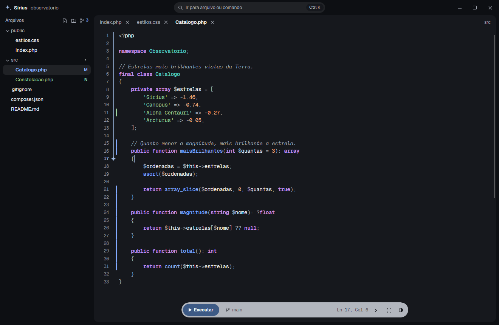
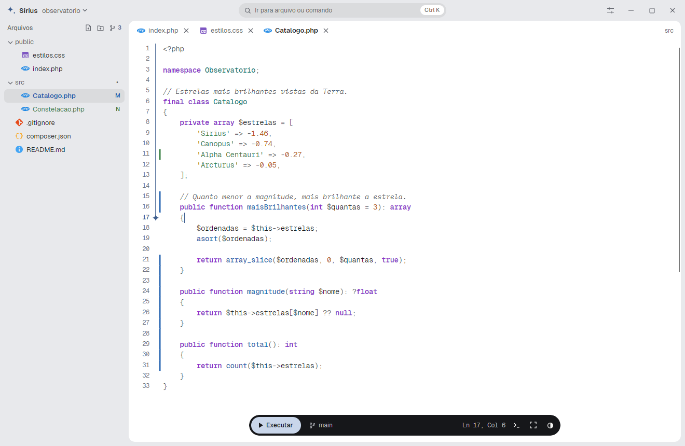
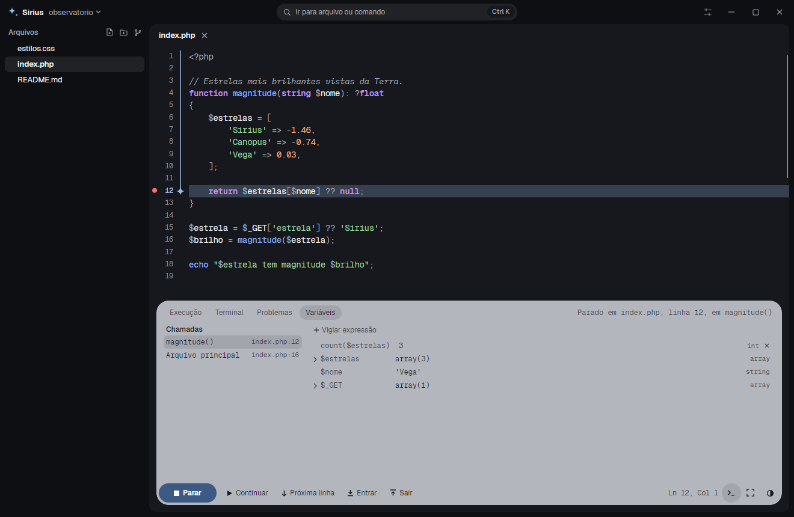
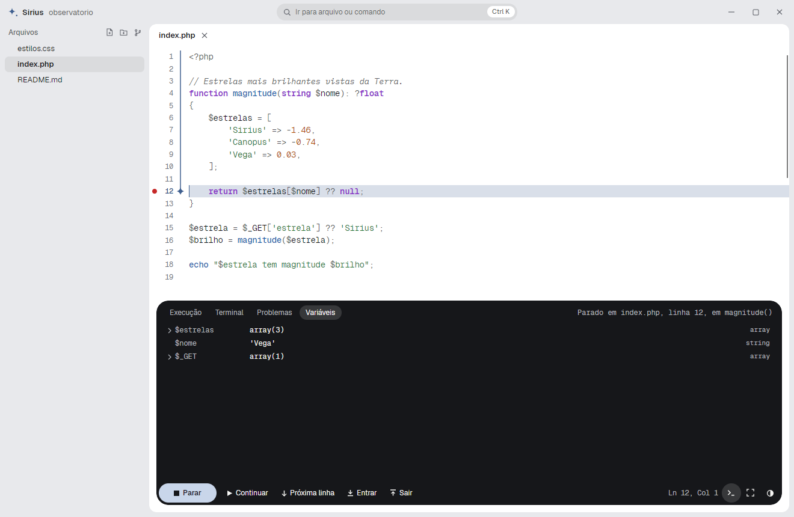
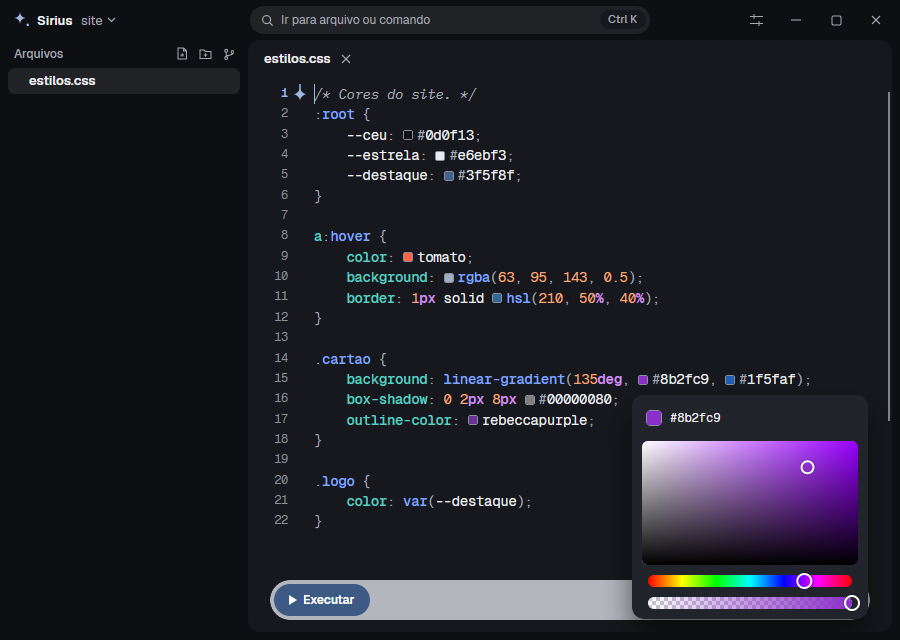
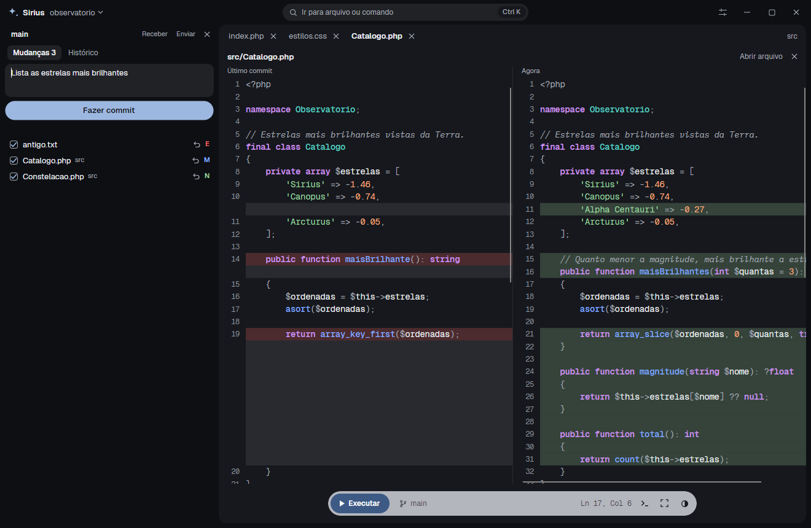
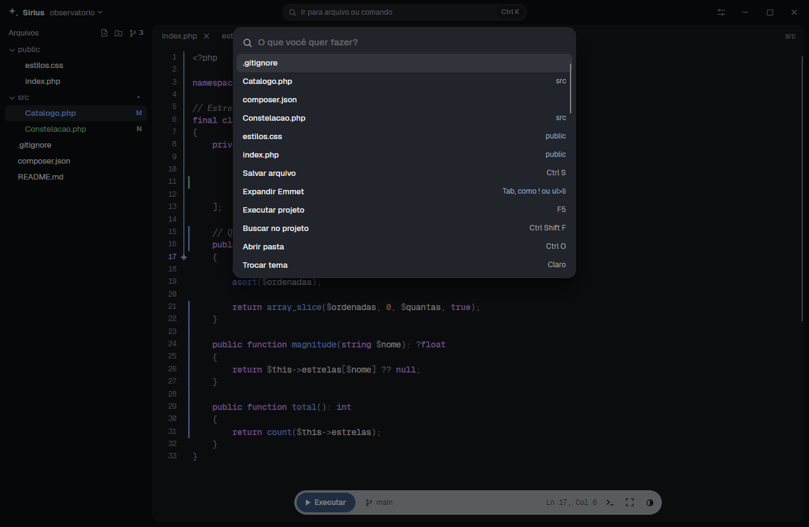
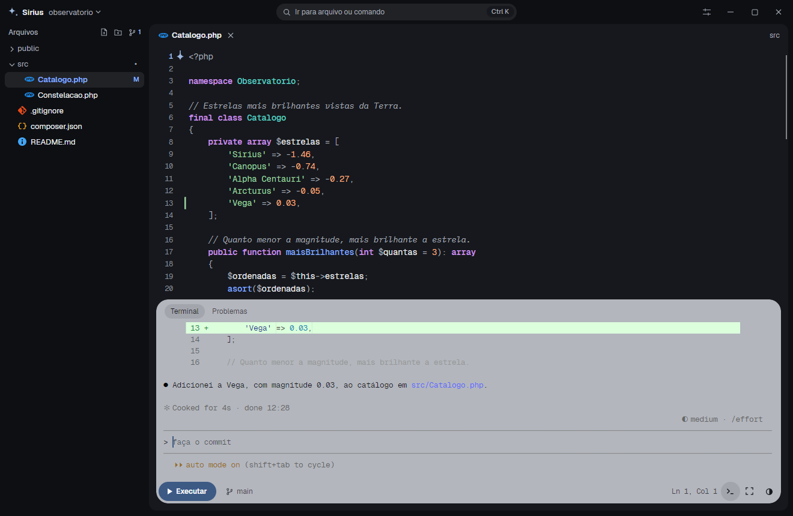

Um fio até onde você está.
Uma linha desce pela margem até a linha ativa, com uma estrelinha na ponta. Você bate o olho e já sabe onde parou.
Ao abrir, o Windows pode mostrar um aviso azul, porque o instalador ainda não tem assinatura digital. Clique em Mais informações e depois em Executar assim mesmo.
Editor, terminal, Git e depuração de PHP em uma única janela. Nativa para Windows, sem navegador por baixo.


Uma linha desce pela margem até a linha ativa, com uma estrelinha na ponta. Você bate o olho e já sabe onde parou.
Os comandos ficam em uma cápsula flutuante. Em Executar, ela se abre em um terminal completo, com erros clicáveis. Em PHP, sobe o servidor e oferece abrir o site.
Clique na margem para marcar uma linha de PHP e abra a página. A Sirius para ali e mostra cada variável, inclusive $_GET e $_POST.
Sem instalar extensão atrás de extensão para começar.
Avance linha por linha, entre nas funções, veja quem chamou cada uma e pare o mouse sobre uma variável para ver o valor. Pare só quando uma condição for verdadeira e vigie expressões a cada parada. Funciona pelo Executar e também nas páginas do Apache. O Xdebug é baixado na primeira vez, se você aceitar.


Clique nele e um seletor altera o texto na hora, em CSS, SCSS, Sass e Less, e dentro de HTML e PHP.

Escreva a abreviação, aperte Tab ou Enter na sugestão e o HTML sai pronto. O Tab seguinte pula para o próximo campo. No CSS, m10 vira margin: 10px;.
Mudanças na árvore e na margem, como era cada trecho num clique, comparação lado a lado, conflitos resolvidos com um clique, commit por arquivo, enviar, receber, branches e histórico.

Autocompletar, erros, definição, todos os usos, dicas e renomear símbolo. Se faltar o suporte a uma linguagem, a própria IDE oferece a instalação.
A barra de comando encontra arquivos e executa ações sem tirar a mão do teclado.

O terminal é completo, com cores, rolagem e acentos. Você pede na cápsula, e a mudança aparece na hora no editor e nas marcas do Git.

Arraste a estrela para comparar.
A interface é desenhada pelo Avalonia, sem WebView nem Electron. O terminal usa o ConPTY, o mesmo mecanismo do Windows.
O instalador fica só no seu usuário e já leva o .NET junto. "Abrir com Sirius" aparece no Explorer, e arrastar arquivos para a janela também funciona.
Salvar mantém a codificação do arquivo e passa por um arquivo temporário. Criar nunca sobrescreve, e excluir vai para a Lixeira.
A única consulta que ela faz por conta própria é perguntar ao GitHub qual é a última versão. Nada do projeto vai junto, e dá para desligar.
Encontrou um problema? Conte em Issues. A própria Sirius avisa quando sai uma versão nova.
O Windows pode avisar. O instalador ainda não tem assinatura digital. Se aparecer um aviso azul, clique em Mais informações e depois em Executar assim mesmo.
Só para Windows. O terminal, o instalador e a integração com o Explorer são específicos dele.